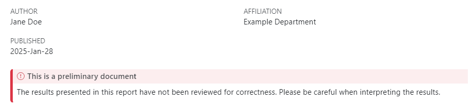
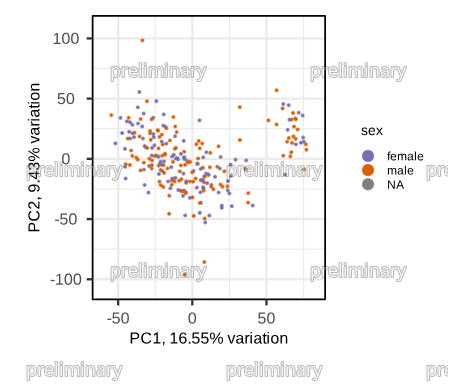

Quarto integration#
DSO integrates with quarto for authoring reproducible analysis reports.
Quarto supports both Python and R through Jupyter notebooks (ipynb) or quarto markdown (qmd) files.
DSO provides a wrapper script
dso exec quarto
to render a quarto stage that provides additional convenience features:
specify quarto configuration in
params.in.yaml(and benefit from templating and inheritance).automatically place HTML report in the
resportdirectory of the stageautomatically create an
outputdirectory before running the quarto scriptexecute a pre-run script to setup the environment
possibility to add a disclaimer text at the top of each report
possibility to add watermarks to all plots
To benefit from the seamless quarto integration, simply start off with one of the quarto templates provided by dso create stage.
Quarto configuration#
Quarto projects can be configured using a _quarto.yml file.
To consolidate all configuration in a single place and to benefit from dso’s hierarchical configuration system, we support that quarto configuration can instead be specified in the dso.quarto field of a
params.in.yaml file. When running dso exec quarto, the corresponding _quarto.yml file is dynamically generated
and removed again after completion.
params.in.yaml
dso:
quarto:
before_script: "" # bash snippet to execute before running `dso exec quarto`, use this to setup environment modules etc.
author:
# please add a complete list of authors. If some authors only contributed to a certain workpackage/stage
# you can add the dso.quarto.author section in the respective params.in.yaml and they will be merged.
- name: Jane Doe
affiliations:
- Example Department
format:
html:
fig-format: svg
toc: true
code-fold: true
embed-resources: true
page-layout: full
execute:
warning: true
message: false
date: now
date-format: YYYY-MMM-DD
The dso.quarto section supports any configuration specified in the quarto documentation. Additionally, there are DSO-specific configuration fields that are detailled
in the next sections:
Pre-run script#
Sometimes it may be required to run a script or bash snippet to setup the environment before running quarto.
This can be achieved by adding a dso.quarto.before_script field to the params.in.yaml file.
For instance, you could use the following snippet to load an enviornment module if required on your system:
before_script: "module load quarto/1.4.549"
Disclaimer#
If you want to add disclaimer box at the top of every quarto document (for instance, to mark the report as preliminary),
you can do so using the dso.quarto.disclaimer option. For instance, the following configuration…
dso:
quarto:
disclaimer:
title: This is a preliminary document
text: |-
The results presented in this report have not been reviewed for correctness.
Please be careful when interpreting the results.
…would result in the following header of the document:

Watermarking#
DSO can automatically add watermarks to all plots in a quarto document. Again, this might be useful for marking figures as preliminary. The following configuration
dso:
quarto:
watermark:
text: preliminary
… would result in a watermark as shown here:

The watermark can be further customized using the following options:
watermark:
text: DRAFT!!!111elf
tile_size: [100, 100] # in pixel. There will always be an instance of the text in the top left and bottom right corner of the tile
font_size: 48
font_color: red
font_outline_size: 5
font_outline_color: "#00FF0099"
On a technical level, watermarking is implemented as a pandoc filter using panflute. After quarto created an intermediate markdown file, pandoc parses it into an abstract syntax tree (AST). The pandoc filter traverses the AST and manipulates each image before pandoc continues conversion into the destination format (usually HTML).